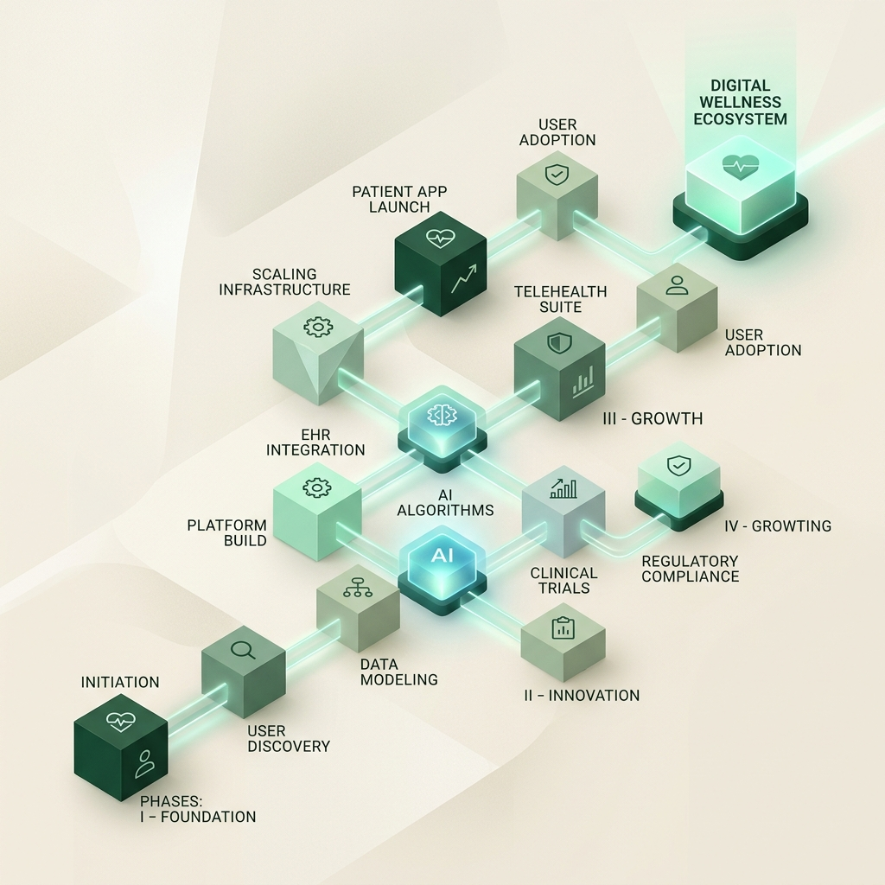
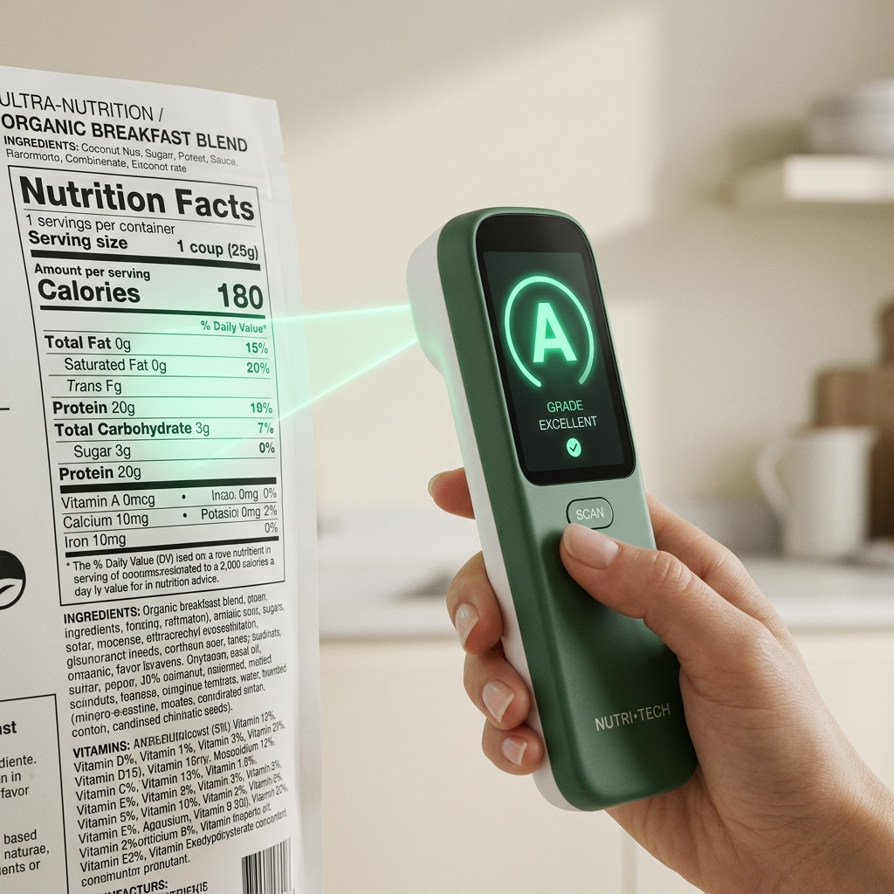
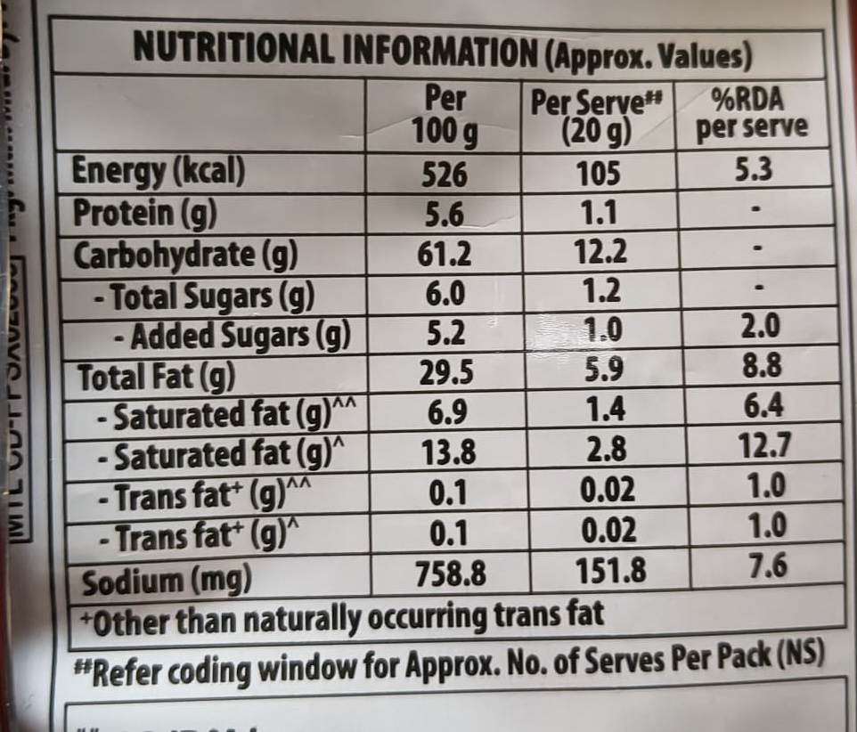
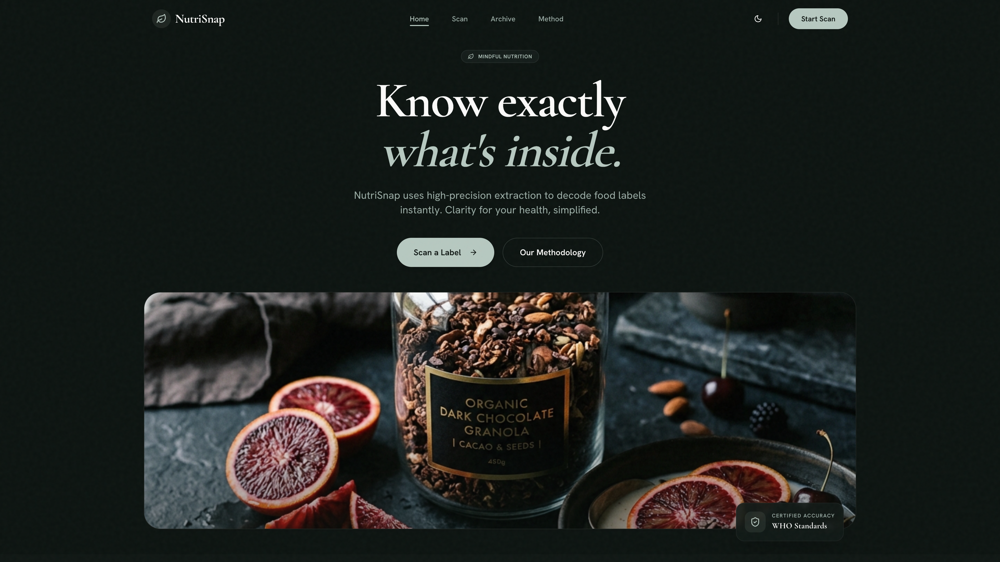
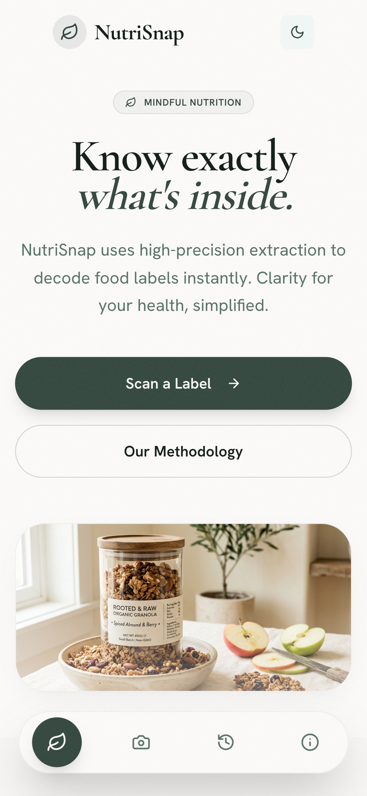

Bridging the gap between raw food labels and actionable health insights
through OCR and Advanced Machine Learning.
KALPAJEET DUTTA
ET22BTHCS045
SHARBANEE KALITA
ET22BTHCS006
PRACHURJYA GOSWAMI
ET22BTHCS034
PATRANGKUR CHETIA
ET22BTHCS003
RAMJAN ALI
ET22BTHCS113
PRIYANUJ BHOWMICK
ET22BTHCS011
Tandrali Ray
Assistant Professor
Department of CSE

As processed foods dominate modern diets, agencies like the FDA and FSSAI have mandated bolder labels for sugar, salt, and fats. Yet, most consumers still find these labels impossible to decipher.
Marketing buzzwords often mask high concentrations of unhealthy ingredients, leaving shoppers in the dark. NutriSnap bridges this gap.
NutriSnap our ML-powered system uses high-accuracy OCR and machine learning to turn raw nutrition panels into a clear, actionable health score in seconds.

Evaluating the gap between market challenges and our technological solutions.
NutriSnap uses a decoupled client-server setup. The React frontend handles image uploads and UI, while the FastAPI backend runs the heavy OCR and ML scoring.
Transforming raw pixels into structured nutrition data through five sequential phases.
React captures the physical label and transmits raw image bytes to the FastAPI backend.
OpenCV removes glare and wrinkles using grayscale and contrast filters to ensure letters are readable.
EasyOCR scans the cleaned image to identify text regions and convert pixels into characters.
Our clean_tokens regex pipeline filters messy OCR text to extract FSSAI keywords and numerical values.
Users verify and correct any data on the React UI review screen before it reaches the ML model.
From raw pixel noise to structured nutritional intelligence.

Even with deep learning, consumer packaging presents unique technical hurdles.
Shiny plastic surfaces reflect ceiling lights, creating "washout" zones that erase critical nutritional data.
Cans and bottles bend the text baseline, causing traditional OCR to miss words as they wrap around the container.
Parallel data columns can cause engines to "read across," merging unrelated nutrients into nonsensical strings.
Running intense image cleanup and multi-stage detection sequentially can create processing delays for the end-user.
Solving real-world OCR hurdles with a high-speed, iterative fail-safe loop.
Backend triggers a ranked list of treatments if basic scan fails:
The loop breaks instantly once core nutrients are extracted. This slashes processing time by 70%, delivering results in milliseconds.
Converting extracted numbers into health intelligence through high-precision classification.
[Energy, Fat, Sat_Fat, Carbs, Sugar, Protein, Fiber, Sodium]
We utilized 500,000 products from the Open Food Facts database. Using an 80/20 split, we trained the model on 400,000 products and verified accuracy on 100,000 blind test samples.
The model achieved a confirmed 95% accuracy on unseen test data, demonstrating robust generalization across diverse global food chemistry patterns.
The intelligent engine behind NutriSnap: XGBoost (eXtreme Gradient Boosting).
Weak Learners: It starts with a simple decision tree that makes initial predictions.
Iterative Correction: Each subsequent tree is built to minimize the Residual Error (loss) of the previous trees.
Ensemble Finalization: The weighted combination of these trees creates a high-precision classification engine.
// Total decision trees in the ensemble.
// Captures complex nutrient interactions.
// Prevents overfitting via shrinkage.
// Multi-class (A-E) loss optimization.
// Full Hardware Acceleration Enabled.
A quantitative comparison proving XGBoost as the optimal engine for nutritional chemistry.
* Training time justified by superior feature handling.
| Feature | RF | HistGB | XGBoost |
|---|---|---|---|
| Sparsity (Missing Data) | ❌ Impute | Partial | ✅ Native |
| Hardware Accel. | CPU | CPU | ✅ CPU/GPU |
| Regularization | None | L2 | ✅ L1 + L2 |
| Real-time Inference | Slow | Medium | ✅ < 20ms |
While training takes slightly longer, XGBoost provides the highest accuracy and the fastest real-time inference, making it the only choice for a production wellness app.
Transforming raw classification data into actionable health intelligence.
XGBoost returns the Health Grade (A-E), the Confidence %, and the normalized Nutrient Matrix (Energy, Fats, Sugars, etc.).
The Nutrient values are passed to the OpenRouter LLM, which generates human-readable health tips and deep dietary analysis.
The user sees a definitive Healthy/Unhealthy badge, the animated Grade, and a list of personalized nutritional insights.
Transitioning from architecture to the living ecosystem.
HTTP://LOCALHOST:8080
* Clicking will open the app and attempt full-screen presentation mode.
| Metric | NutriSnap | Yuka | HealthifyMe | MyFitnessPal |
|---|---|---|---|---|
| Input Method | Visual OCR | Barcode | Food Photo / Barcode | Barcode / Manual |
| Local Products | Full Support | Database Reliant | Limited Support | Database Reliant |
| DB Dependency | Independent | 4M+ Items | Fixed DB | Crowdsourced DB |
| Health Logic | Nutri-Score | Proprietary Rating | Contextual Score | Calories/Macros |
| User Review | Yes (HITL) | No | No | No |
Works on local, imported, or niche products that break barcode-reliant competitors like Yuka.
Our "Review & Correct" phase ensures 100% accurate data, a precision edge missing in HealthifyMe.
Converts complex nutrients into a scientific Nutri-Score (A-E), beyond basic calorie logging.


Combining Barcode lookup with OCR as a smart fallback.
Automated real-time safety alerts for Nuts, Gluten, & Soy.
On-device TFLite models for 100% privacy and speed.
NutriSnap is more than a scanner; it's a Public Health Tool that translates raw data into actionable insights.
Empowering consumers to make informed choices in supermarket aisles instantly.
A digital safeguard against lifestyle diseases like Diabetes and Obesity.